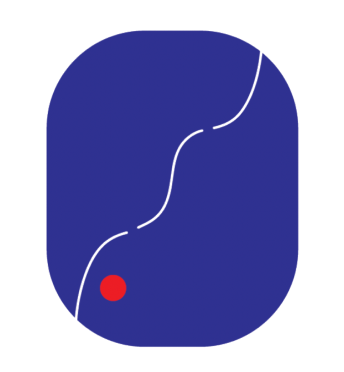

<!-- Navigation Bar START -->
<nav class="navbar navbar-expand-lg sticky-top justify-content-center m-0 p-0">
    <div class="container-fluid p-0">
        <a class="navbar-brand hide-desktop" href="./index.html">
            <div class="wrap">
                <div>
                    
                </div>
                <div>
                    CMU JSA<br>日本学生会
                </div>
            </div>
          </a>
        <button class="navbar-toggler" type="button" data-bs-toggle="collapse" data-bs-target="#navbarToggle" 
                aria-controls="navbarToggle" aria-expanded="false" aria-label="Toggle navigation">
            <span class="navbar-toggler-icon"></span>
        </button>
        <div class="collapse navbar-collapse justify-content-center" id="navbarToggle">
            <ul class="navbar-nav">
                <li class="nav-item first hide-mid"></li>
                <li class="nav-item first-mid hide-mobile">
                    <a class="nav-link" href="./index.html">
                        <div class="wrap">
                            <div>
                                
                            </div>
                            <div>
                                CMU JSA<br>日本学生会
                            </div>
                        </div>
                    </a>
                </li>
                <li class="nav-item hide-desktop">
                    <a class="nav-link" href="./index.html">Home<br>ホーム</a>
                </li>
                <li class="nav-item">
                    <a class="nav-link" href="./members.html">Members<br>会員</a>
                </li>
                <li class="nav-item dropdown">
                    <a class="nav-link " href="" id="navbarDropdown" role="button" data-bs-toggle="dropdown" aria-expanded="false">
                        Events<br>イベント
                    </a>
                    <ul class="dropdown-menu" aria-labelledby="navbarDropdown">
                        <li><a class="dropdown-item" href="./cultural.html">Cultural Events<br>文化イベント</a></li>
                        <li><a class="dropdown-item" href="./matsuri.html">Matsuri<br>祭り</a></li>
                        <li><a class="dropdown-item" href="./booth.html">Booth<br>ブース</a></li>
                    </ul>
                </li>
                <li class="nav-item">
                    <a class="nav-link" href="./faq.html">FAQ<br>良くある質問 </a>
                </li>
                <li class="nav-item hide-mid"></li>
            </ul>
        </div>
    </div>
</nav>
<!-- Navigation Bar END -->